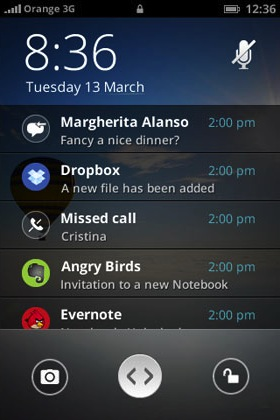

Firefox OS Web Apis
Web Activities
Notifications API
... a surprise
Welcome
Follow the slides
Contact me!
Hands on code
- Web Activites
- Notifications API
- ... a real developer preview
Web activities
Today we will learn how to use them,
but as well how to define them and offer our services to other apps
Notifications API
How we can use notifications in Firefox OS
Tips and tricks (some of them proper hacks)
Simple Push API
Push notifications for the win!
I mean, for the WEB!
Web Activitys
Leverage some work to other apps!
Use them to execute tasks that other apps know how to do better than you
Pretty simple format
verb
filter (optional)
parameters (optional)
BOOM!
Hands on code!
Let's take a look to an example application
Desktop Notifications
... something weird in this notifications ...
How we do use them?
notification createNotification(
in DOMString title,
in DOMString description,
in DOMString iconURL Optional
);
That requires some permissions
"permissions": {
"desktop-notification":{}
}
And provides some actions
notification.show();
notification.onclick = function () { // do something cool };
notification.onclose = function () { // do something cooler };
And again a system message to wake us up
window.navigator.mozSetMessageHandler('notification',
function onNotification(notification) {
...
});
});
Example
Push Notifications
Ready for version 1.1
But we can start playing with them!
Simple Push API
First draft available: https://developer.mozilla.org/en-US/docs/WebAPI/Simple_Push
Named like that because:
It's Simple
It does Push
... and it's and API
Pretty easy to use
Register to receive notifications
var req = navigator.push.register();
req.onsuccess = function(e) {
var endpoint = req.result;
console.log("New endpoint: " + endpoint );
}
req.onerror = function(e) {
console.log("Error getting a new endpoint: " + JSON.stringify(e));
}
Pretty easy to use
Listen to system messages
window.navigator.mozSetMessageHandler('push', function(e) {
console.log('My endpoint is ' + e.pushEndpoint);
console.log('My new version is ' + e.version);
});
Pretty easy to use
You will require some permissions and system message definitions in your manifest
"messages": [
{ "push": "/index.html" }
],
"permissions": {
"push": {}
}
Take a look to the example
https://github.com/arcturus/firefox-os-simplepush
Thank you so much!
Folow me: @mepartoconmigo
Get the slides
Get the examples
https://github.com/arcturus/firefox-os-webactivities